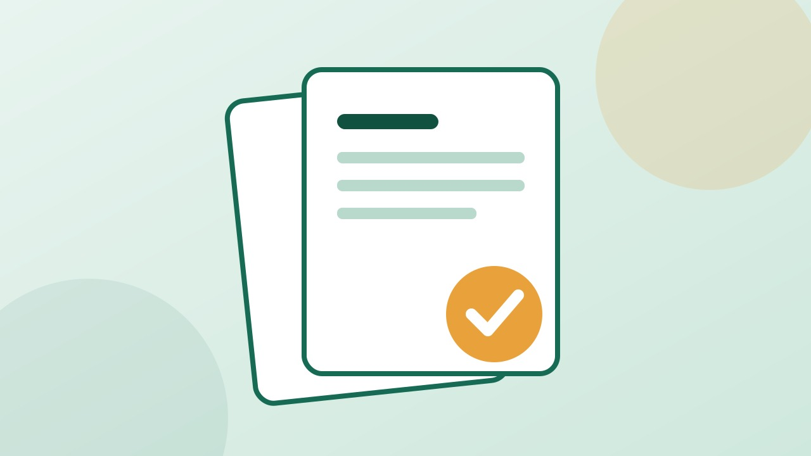
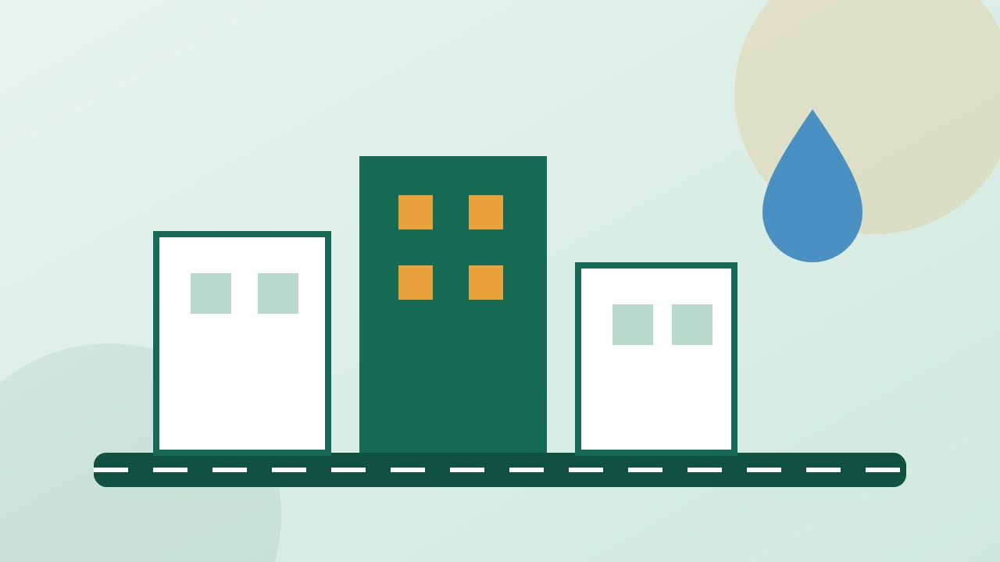

Government documents
Find starting points and guidance for common identity and government document services.
Explore UMANG ↗A simple guide to public services in India. Explore procedures, understand document requirements and find the official channel for your next step.
Search the directory or choose a category to get started.

Find starting points and guidance for common identity and government document services.
Explore UMANG ↗Understand how to prepare and submit a grievance to the appropriate public authority.
Visit CPGRAMS ↗Find guidance and official resources for problems with products and services.
Visit Consumer Helpline ↗Explore scholarship information and learn where to check official eligibility requirements.
Visit National Scholarship Portal ↗
Find the relevant state, district or municipal service directory for your location.
Visit National Portal of India ↗Learn about accessing and managing eligible digital documents through official services.
Visit DigiLocker ↗CivicConnect helps you prepare before visiting an official portal.
Search by your need or browse the available public-service categories.
Review the guidance, documents and information you may need to prepare.
Use the verified official link to check current rules and complete the process.
Create a draft that you can review, copy and submit through the relevant official channel.
Saved to CivicConnect only, so you can track its status here. It is not forwarded to any government department.
Enter the reference number you received when you saved your complaint.